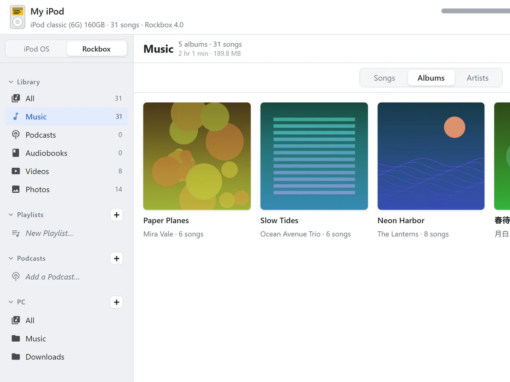

The Rockbox database, built on your PC
Every time you add songs, ZenPod builds a database in the same format as Rockbox 4.0 on your PC. Eject the iPod and browse by artist and album under “Database” right away. Play counts and ratings are kept.
